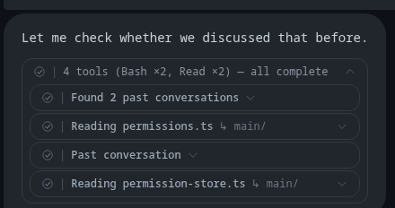
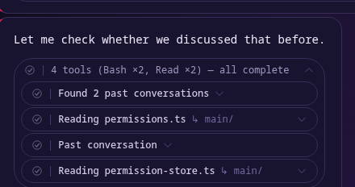
When Claude searches your past conversations, the result card starts closed inside its own closed group — you click twice before you see a Preview button.
→ Leave it closed like every other tool card, or open the results automatically so Preview is one click away.
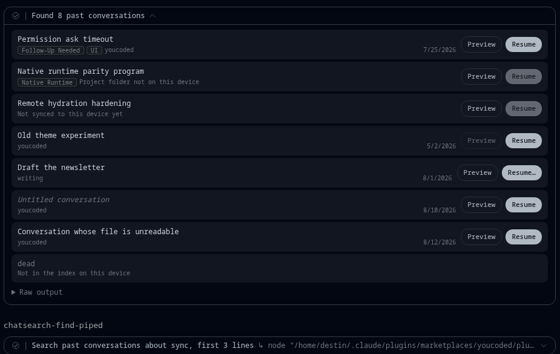
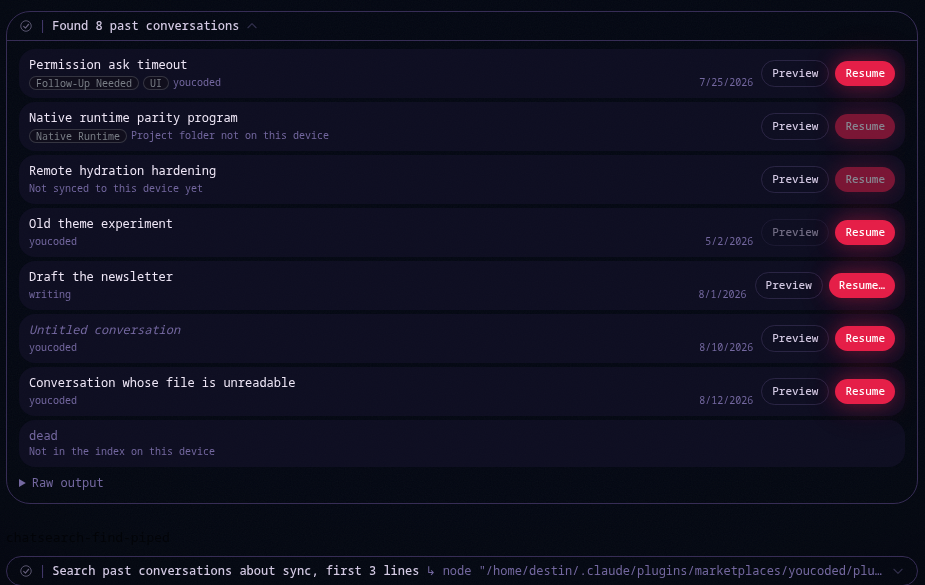
One list, eight different situations: found and open, blocked two different ways, gone from this device, a different assistant, no title, unreadable, and simply not found.
→ Confirm this covers everything you'd expect to see — nothing new to design here, just a look before backend work starts.
When Resume can't work, the row says why in plain words right where the date would be — not hidden behind a hover tooltip.
→ Confirm this reads clearly at a glance.
A conversation whose transcript is gone from this device disables its Preview button too, not just Resume — there is nothing left to read.
→ Confirm this is the right call rather than hiding the row entirely.
On a phone, there's no search index yet, so this whole list can't be built — but the small title above it still says “Found 8 past conversations,” a promise the screen underneath doesn't keep.
→ The title needs to stop claiming a list exists when it doesn't — flagged for the phone-specific follow-up work, not a decision for right now.
If Claude trims the search command's output itself (piping it through something like “| head -3”), the result renders as plain typed text instead of a card — building a card from a partial answer would risk showing wrong information.
→ Confirm this fallback is the right call.
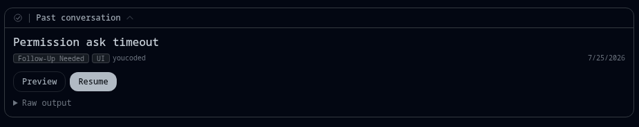
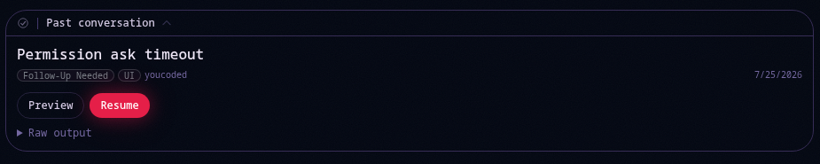
When Claude opens one conversation by name instead of searching, the card header says “Past conversation” and shows just that one row.
→ Confirm this wording and layout are fine.
A technical safety check: the code that recognizes “this line names one conversation” could theoretically be fooled by a search list if two conversation ids were identical for the first 35 characters — vanishingly unlikely, and not something that has ever happened, but worth a one-line fix to close off.
→ Confirm you're fine with a small code fix here, no visual change.
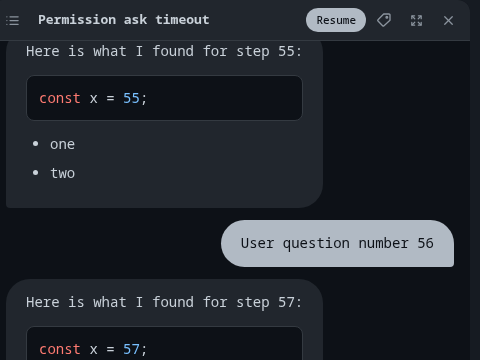
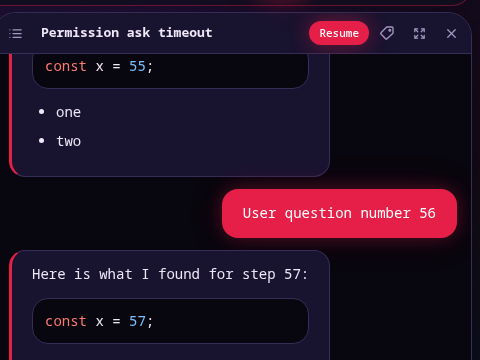
Left to right: a list toggle, the conversation's title, a Resume button, a tag icon (same one as the resume screen), expand, and close.
→ Confirm this control lineup and order are right.
Where Claude used tools in between messages (reading files, running commands), the panel marks the gap — here, “3 tool calls not shown” — instead of pretending the conversation flowed seamlessly.
→ Confirm this marker reads clearly.
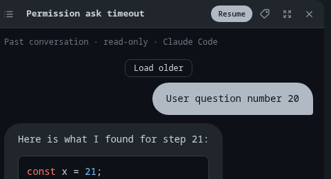
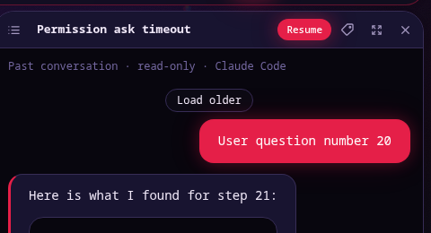
A quiet caption says “Past conversation · read-only · Claude Code”, and a “Load older” button appears once you've scrolled back as far as this panel has loaded — only 40 messages come over at once.
→ Confirm the caption wording and the Load older control are fine as-is.
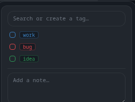
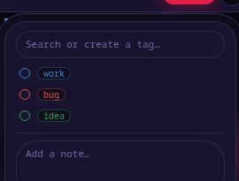
Clicking the tag icon opens the same tag-and-note editor the Resume screen already uses — nothing new was drawn for this.
→ Confirm reusing that exact editor here is right.
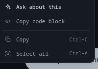
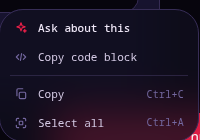
Right-clicking text inside a previewed conversation offers the same menu the live chat does — Ask about this, Copy, Select all — nothing missing, nothing extra.
→ Confirm this matches your expectations for a read-only view.
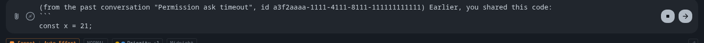
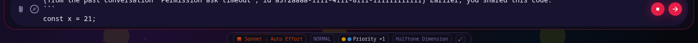
Picking “Ask about this” on something inside a past conversation types this ahead of your question: “(from the past conversation “Permission ask timeout”, id a3f2aaaa-1111-4111-8111-111111111111) Earlier, you shared this code:”
→ The id has to be in there — it's the only way Claude can go read more of that old conversation — but is the wording OK to send as-is, or does it need to read more naturally?
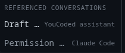
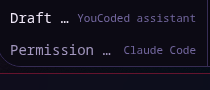
A running list of every past conversation you've previewed this session sits at the bottom of the file list — shown here with two entries, one from each assistant.
→ Keep it, or cut it? It's the one part of this feature nobody has found a clear need for — the search result cards stay visible in the chat either way, and the reading panel works fine without this list.
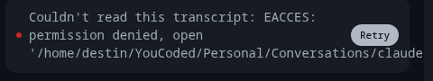
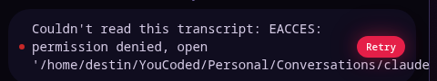
The one you can actually see today: “Couldn't read this transcript: EACCES: permission denied, open '...'” with a Retry button — the real underlying error, not a guess.
→ Confirm this reads clearly to you as a non-developer.
If a read fails and the app genuinely doesn't know why, it says so instead of guessing: “Unable to read this transcript.” plus “The read didn't report a reason. Diagnosing will collect the app's logs so Claude can look at what happened.” — with Report a bug / Diagnose with Claude buttons instead of Retry.
→ Confirm this wording is honest and clear — this exact screen can't be forced to appear yet, so there's no picture of it, only the wording itself.
Four more specific reasons a read can fail are written but not wired up to anything yet — read them now so you've seen them before they ever appear: “Not a conversation id” · “This conversation is not in the index on this device” · “This file is a helper transcript, not a conversation” · “Transcript is stored outside the folders YouCoded may read”.
→ Confirm all four read clearly in plain English — no picture for these either, they're not connected to anything yet.
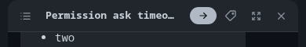
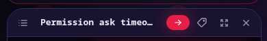
At phone width the Resume button shrinks to just an arrow icon so the whole row — list, title, Resume, tag, expand, close — still fits without crowding.
→ Confirm this still feels usable at this width.
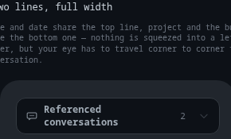
The look of this card is already locked in (shown here) — but nothing builds it yet, because there's no way for Claude to tell the app “show this conversation”.
→ Three ways to get there: (a) reuse an existing search command as the signal — smallest change; (b) add a new command to the search plugin — but people who already installed it won't get the update until a separate app fix ships; (c) give the YouCoded assistant (not Claude Code) a real dedicated tool for this — a small, contained change, but only works for that one assistant.
Session references — sign-off gate — your answers
Nothing here touches the backend yet — this is all fake data in the design sandbox. Four things below are real decisions only you can make (marked Judgment); the rest are already-built surfaces asking “does this look right?” (marked Measured). Click Yes, No, or Tell me more on each; nothing is built or changed until you say so.
| Item | # | Point | Answer | Note |
|---|